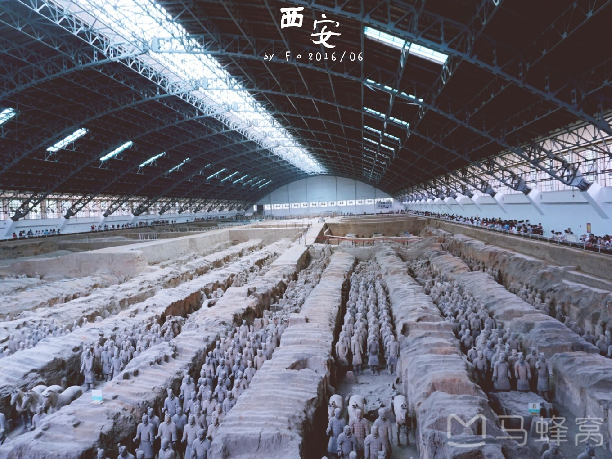

一日游推荐：兵马俑、华清宫-感受秦唐盛世
【交通】华清宫和兵马俑是在一条线上，在火车站东边广场坐306，也就是游5，需要注意的是：西安火车站附近冒牌的旅游大巴超级多，火车站周围的那些吆喝着问你是不是坐去兵马俑车都是骗人的，真正的国营大巴在火车站东边广场，在大巴旁边有黄色的排队线，上了车付钱，车票是7元，发车之后车上的导游会卖地图，买不买都可以，个人觉得并没有什么用。车上会有导游向你介绍两个地方的基本情况。
【门票】华清池和兵马俑的门票均为150元，半价票75。华清宫的150是套票，包含了骊山的门票，不过如果要坐索道要额外付钱，骊山上面有烽火台，兵谏亭老君殿等景点。
【建议游玩时间】两个地方去的早点的话一天就够了，可以先去华清宫再去的兵马俑，因为大巴返程的时候在兵马俑始发，如果满座的话途径华清宫是不会停车的，所以建议先去华清宫。从华清宫到兵马俑的话，车就会相对多一些，但是一定也要擦亮眼睛选择国营的大巴或者正规公交。
兵马俑从售票处到博物馆还有一段距离，景区内有电瓶车需要另外付钱，也可以走过去，不是很远。去兵马俑的话强烈建议请个导游或者租个导览器，不然真的就是几个大坑而已，电子导览价格一个30，有一个省钱的小妙招哦，如果是两个人的话建议租一个就可以了，然后带上耳机就可以两个人用了。
回程：从兵马俑回市里的时候坐306或者307都可以，不过站牌不太好找，可以多问问路人。306回程到火车站，站很少，也不绕，会比较快，是旅游大巴。307回程的终点到大雁塔，是公交，车内环境没有306好，沿途停靠的站比较多，还绕路，还比306要贵一块钱。如果是住西安站附近可以坐306，住大雁塔附近就坐307。去程306上面导游会告诉你回程只有306和307，但实际上915也可以，和另外两个的区别就是所属的公交公司不一样，915是属于临潼的。